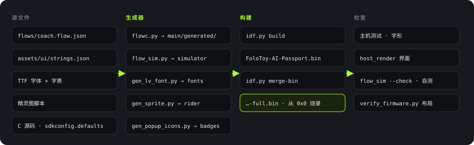

简体中文 · English
Build
制作方法
从源文件到固件

tools/validate.sh、main/CMakeLists.txt。固件里有四类内容是脚本生成的，不手写：
| 生成物 | 输入 | 生成脚本 | 输出 |
|---|---|---|---|
| 状态机和界面 | flows/coach.flow.json |
tools/flow/flowc.py |
main/generated/ 四组 .c/.h |
| 交互模拟器 | 同一个流程图 | tools/flow/flow_sim.py |
assets/sim/coach-flow.html |
| 字体 | Noto Sans SC、Staatliches（OFL 1.1）+ 字表 | assets/tools/gen_lv_font.py |
assets/fonts/heygo_*.c |
| 精灵图 | 脚本内的绘制定义 | gen_sprite.py、gen_popup_icons.py |
assets/sprites/*.c |
状态机和模拟器来自同一个流程图，所以模拟器里试到的行为就是设备的行为。flowc.py --check 和 flow_sim.py --check 会在生成物过期时报错。
字体
| 字体 | 字形数 | 用途 |
|---|---|---|
heygo_sc_16 |
3,871 | 正文。含 GB2312 一级字（3,755 个），因为要显示手机发来的转写和回答 |
heygo_sc_28 |
202 | 大号状态词，只含界面词汇 |
heygo_display_20/34/48 |
各 95 | 品牌字体 Staatliches，数字和英文标签 |
来源：assets/fonts/*.chars.txt；assets/tools/gen_lv_font.py 文件头。
构建
- 安装 ESP-IDF 5.5.3。
- 激活环境：
. $IDF_PATH/export.sh。 - 在
Firmware/里运行门禁：./tools/validate.sh。
门禁会在一个临时目录里构建，所以不会污染工作区。构建步骤（tools/validate.sh:145-175）：
SDKCONFIG_DEFAULTS=sdkconfig.defaults idf.py -B <临时目录> build
idf.py -B <临时目录> merge-bin -o FoloToy-AI-Passport-full.bin
python3 tools/verify_firmware.py <临时目录> # 检查分区和镜像位置
python3 tools/host_render/render.py ... # 渲染界面图
python3 tools/archive_firmware.py create ... # 归档调试文件
产物：
| 文件 | 内容 | 用途 |
|---|---|---|
build/FoloToy-AI-Passport-full.bin |
bootloader + 分区表 + 应用，合并成一个文件 | 从 0x0 烧录，用于新设备或完整刷新 |
build/FoloToy-AI-Passport.bin |
只有应用 | 不含 bootloader 和分区表，不要单独上传 |
本书写作时的构建结果
2026-10-18 在提交 df81cc8 上（Firmware/ 与 c865ba8 相同）运行完整门禁，退出码 0：
门禁
PASS
应用镜像
1.86MiB
合并镜像
1.92MiB
构建步骤
1,995
| 检查 | 结果 |
|---|---|
| 主机测试 | 全部 PASS，含协议、ADPCM、播放规则、按键、链路核心、界面组件 |
| 模拟器 | --check PASS，自测 122/122 |
| 字形 | PASS，71 条界面词汇，43 条流程文字 |
| 布局 | 应用 1,945,536 / 8,323,072 字节，在 factory 的 0x10000 |
| 合并镜像 | 2,011,072 字节，从 0x0 烧录 |
编译选项：-Og（调试优化），断言开启。Flash 用 DIO 模式、80 MHz（生成的 sdkconfig）。
烧录
来源：Firmware/docs/development/engineering/firmware-layout.md "Flashing and stored data" 一节。
| 场景 | 方法 | 注意 |
|---|---|---|
| 新设备或完整刷新 | 把 …-full.bin 写到 0x0 |
合并文件会填满镜像之间的空隙，可能清掉 NVS 和 PHY 数据 |
| 日常开发 | 分段烧录：idf.py -p <端口> flash |
能保留 NVS。前提是分区布局兼容 |
| 擦除整片 | idf.py erase-flash |
会清掉所有用户数据。不要当成例行步骤 |
- 日志和烧录走 ESP32-C3 自带的 USB Serial/JTAG。GPIO18/19 留给 USB（
Firmware/docs/README.md）。 - 烧录新固件之前不需要备份旧固件，但新固件不保留回滚副本。